Mata Kuliah: Interaksi Manusia dan Komputer (CIF63108 / CIF63109)
Penerjemahan Prototipe High-Fidelity Figma (web-hi-fi) ke Aplikasi Web Statis Berbasis HTML5, CSS3, dan JavaScript ES6+ dengan Keterlacakan Konsep IMK dan Standar Aksesibilitas WCAG 2.2 Level AA
| Nama Aplikasi / Proyek | CoinKeeper — Aplikasi Pencatatan dan Rancangan Keuangan Mahasiswa |
|---|---|
| Kelompok / Anggota |
1. 255150200111045 — Jonathan Simamora 2. 255150200111048 — Joseph Mohr Dio Sinamo 3. 255150207111071 — M. Reza Faris Al Faqih |
| Semester | [Semester Ganjil / Genap — Tahun Akademik 2026/2027] |
| Institusi | [Program Studi Teknik Informatika] · Fakultas Ilmu Komputer, Universitas Brawijaya |
| Rujukan Desain Figma | Tugas-imk · Halaman web-hi-fi (node-id=124:2, 45 frame desktop 1440×1024) |
| Tanggal Penyusunan | 23 November 2026 |
index.html)12pages/catat-transaksi.html)13pages/anggaran.html)15pages/laporan.html)16pages/tabungan.html)16pages/login.html)1701 · Dasbor)1202 · Catat Transaksi)1403 · Anggaran)1505 · Tabungan)17pages/login.html)18dialog-forgot-password)18web-hi-fi) vs Implementasi & Justifikasi Deviasi19Pengelolaan keuangan pribadi merupakan tantangan nyata bagi mahasiswa perguruan tinggi, khususnya mahasiswa perantau yang bergantung pada uang saku bulanan terbatas. Berdasarkan survei awal terhadap 32 responden mahasiswa yang terdokumentasi dalam dokumen referensi.pdf, sebanyak 90,6% mahasiswa mengandalkan uang saku dari orang tua sebagai sumber pendanaan utama, 53,2% mengaku pernah atau sangat sering mengalami kesulitan keuangan sebelum akhir bulan, dan 68,7% jarang atau tidak pernah mencatat pengeluaran harian mereka.
Temuan kuantitatif tersebut diperkuat oleh hasil elisitasi wawancara pada Laporan Proyek Akhir Tahap 1 terhadap dua mahasiswa S1 Teknik Informatika (Fahrizal Dwi Candra dan Mohammad Fahmi Alfahrezy). Kedua partisipan mengeluhkan bahwa aplikasi pembayaran digital (QRIS dan e-wallet) hanya menampilkan daftar mutasi mentah tanpa klasifikasi kategori mahasiswa maupun batas anggaran, sementara pencatatan manual di aplikasi catatan ponsel terasa melelahkan, mudah terlupa, dan tidak memberi umpan balik saat pengeluaran konsumtif mulai melampaui batas wajar.
Dari sudut pandang rekayasa Interaksi Manusia dan Komputer (IMK), kegagalan pencatatan keuangan mahasiswa berakar pada dua jurang interaksi: tingginya beban kognitif dan motorik saat memasukkan transaksi (Gulf of Execution) serta ketiadaan visibilitas kondisi keuangan secara seketika (Gulf of Evaluation). Tanpa patokan anggaran dan peringatan dini, pengguna baru menyadari pemborosan setelah saldo habis.
Sebagai solusi, dirancang CoinKeeper—aplikasi pencatatan dan pemantauan keuangan pribadi berbasis web khusus mahasiswa. Solusi ini menawarkan alur pencatatan cepat (target ≤ 3 langkah atau ≤ 10 detik), pembagian batas anggaran per kategori dengan peringatan bertingkat pada ambang 80% (Hampir habis) dan ≥ 100% (Terlampaui), visualisasi laporan bulanan berbasis grafik batang komparatif, serta pengelolaan target tabungan dengan validasi kecukupan saldo.
Pengembangan front-end ini bertujuan mewujudkan cetak biru antarmuka Figma halaman web-hi-fi menjadi situs web statis yang fungsional, responsif, dan terukur terhadap seluruh kaidah teori IMK yang dipelajari pada mata kuliah Interaksi Manusia dan Komputer (IMK 00–06 dan IMK-10). Tujuan spesifiknya meliputi:
web-hi-fi secara presisi—serta melengkapinya dengan 1 halaman masuk akun lokal (pages/login.html) yang selaras—ke dalam kode HTML5 semantik, CSS3 berbasis Design Tokens, dan JavaScript ES6+ murni.localStorage (coinkeeper_state_v1 dan coinkeeper_session_v1) agar seluruh operasi tambah, ubah, hapus, urungkan (Undo), filter periode, masuk akun, dan kalkulasi saldo/anggaran berjalan nyata secara sinkron antarhalaman.Tabel 1. Ruang Lingkup Pengembangan Front-End CoinKeeper
| Termasuk dalam Ruang Lingkup (IN-Scope) | Di Luar Ruang Lingkup (OUT-of-Scope) |
|---|---|
• Lima layar inti responsif (Dasbor, Catat Transaksi, Anggaran, Laporan, Tabungan) sesuai Figma web-hi-fi.• Halaman tambahan Masuk Akun lokal ( pages/login.html) dengan validasi 3 fase, tombol lihat/sembunyikan kata sandi, dialog bantuan, isi otomatis akun demo, dan sinkronisasi sesi lokal (coinkeeper_session_v1).• Simulasi basis data dan persistensi klien berbasis localStorage.• Peringatan otomatis ambang anggaran 80% (Hampir habis) dan ≥ 100% (Terlampaui). • Visualisasi grafik batang bulanan dengan filter periode serta pengelolaan target tabungan tervalidasi saldo dan fitur Undo. |
• Integrasi API otomatis dengan layanan m-banking, QRIS, atau e-wallet nyata. • Autentikasi sisi server (OAuth/JWT), registrasi akun riil, pemulihan kata sandi via email server, maupun penyimpanan basis data terpusat. • Fitur transaksi pembayaran, pinjaman daring (paylater), atau investasi. • Aplikasi seluler native dan dukungan akun multi-pengguna atau keluarga. |
Mengacu pada pemodelan kebutuhan dokumen referensi.pdf (Bab 3.1), sistem CoinKeeper melibatkan satu aktor utama, yaitu Mahasiswa, yang memiliki kewenangan penuh untuk memantau saldo, mencatat transaksi harian, menetapkan batas anggaran per kategori, mengevaluasi laporan bulanan, serta mengelola target tabungan.
Pada Laporan Proyek Akhir Tahap 1, karakteristik pengguna diwakili oleh persona Rizal (Mahasiswa S1 Teknik Informatika semester 4, anak kos perantau) yang mengharapkan pencatatan secepat mengirim pesan singkat serta pengalaman penggunaan yang tenang tanpa rasa dihakimi (non-judgmental financial feedback). Pada implementasi antarmuka Hi-Fi Figma dan website ini, identitas akun aktif pada bilah navigasi ditampilkan sebagai profil Faqih (Akun pribadi).
Seluruh alur interaksi situs web memetakan gabungan Use Case dari referensi.pdf (UC-01 s.d. UC-04), Kebutuhan Fungsional (KF-01 s.d. KF-07), serta enam tugas utama pada Hierarchical Task Analysis (HTA) di Laporan Proyek Akhir Tahap 2. Ringkasan pemetaan disajikan pada Tabel 2.
Tabel 2. Pemetaan Use Case, Kebutuhan Fungsional, dan HTA ke Layar Web
| Kode | Nama Use Case / Tugas | Layar Web Target | Ringkasan Perilaku Sistem & Aturan Validasi |
|---|---|---|---|
| HTA-T1 & T4 | Memantau Kondisi Keuangan & Peringatan Dini | index.html(01 · Dasbor) |
Menghitung saldo utama, total pengeluaran bulan aktif, sisa anggaran, 4 transaksi terakhir, serta menampilkan kartu Perlu perhatian untuk pos ≥ 80% dan ≥ 100%. |
| UC-01 ( KF-01, KF-02, HTA-T3) |
Mencatat & Menghapus Transaksi Harian | pages/catat-transaksi.html |
Memilih jenis (Pengeluaran/Pemasukan), mengisi nominal valid (> 0), memilih 1 dari 7 chip kategori, tanggal, dan catatan. Menyimpan ke localStorage, menampilkan modal konfirmasi, serta mendukung hapus dengan modal konfirmasi + Urungkan. |
| UC-03 ( KF-04, KF-05, HTA-T2 & T4) |
Menetapkan & Memantau Batas Anggaran | pages/anggaran.html |
Menampilkan 5 kartu batas kategori (Makan, Belanja, Hiburan, Transport, Tagihan), mengubah batas nominal lewat modal dialog, menghitung ulang progres dan status (Aman < 80%, Hampir habis 80–99%, Terlampaui ≥ 100%), serta memberi peringatan. |
| UC-02 ( KF-03, HTA-T6) |
Melihat Laporan Pengeluaran Bulanan | pages/laporan.html |
Menyaring data periode (Sep, Okt, Nov 2026), menampilkan grafik batang per kategori beserta garis batas anggaran masing-masing, delta bulan lalu, kategori terbesar, serta empty state jika periode kosong. |
| UC-04 ( KF-06, KF-07, HTA-T5) |
Mengelola Target & Setoran Tabungan | pages/tabungan.html |
Menampilkan progres cincin donat tiap target (Laptop baru, Dana darurat), menyetor dana dengan validasi saldo utama mencukupi (KF-07), menambah target baru, serta menyediakan tombol Urungkan. |
| Tambahan (Auth Lokal) |
Masuk Akun & Sesi Lokal | pages/login.html |
Menampilkan antarmuka autentikasi split-screen (desktop) / ringkas (mobile), validasi email & kata sandi ≥ 6 karakter, toggle lihat/sembunyikan sandi 44×44px, dialog bantuan kata sandi, isi otomatis akun demo (faqih@student.ub.ac.id / coinkeeper123), sinkronisasi nama profil, dan pintasan langsung ke index.html. |
Mengikuti batasan arsitektur informasi pada Laporan Proyek Akhir Tahap 1 dan materi IMK 05, struktur situs menggunakan hierarki dangkal (shallow hierarchy) dengan kedalaman menu tepat 1 level (5 menu utama sejajar tanpa submenu bersarang). Hal ini menghindarkan pengguna dari disorientasi kognitif saat berpindah antar tugas. Halaman masuk akun opsional (pages/login.html) dirancang sebagai gerbang autentikasi lokal mandiri di luar bilah navigasi utama 5 tab dengan tautan pintas langsung menuju index.html.
web-hi-fi):https://www.figma.com/design/FVCtagXn3FSiHgP9gGvrDz/Tugas-imk?node-id=124-2web-hi-fi terdiri atas 45 frame desktop (1440×1024): 5 frame layar inti pada baris pertama dan 40 frame state interaktif (variasi filter bulan Sep/Okt, 13 kombinasi jenis × kategori, 5 modal dialog konfirmasi/input, state pasca-hapus dengan tombol Urungkan, state pembaruan anggaran, serta state setoran dan target tabungan baru). Halaman hi-fi mobile (390×844) menjadi acuan adaptasi navigasi bottom bar pada layar kecil.
Situs web CoinKeeper dibangun murni menggunakan standar web terbuka tanpa framework, tanpa perkakas build/bundler, dan tanpa ketergantungan pustaka JavaScript eksternal:
<aside>, <nav>, <header>, <main>, <section>, <article>, <footer>, dan elemen dialog bawaan <dialog>) untuk menjamin keterbacaan mesin dan teknologi bantu.:root di css/variables.css. CSS Grid digunakan untuk tata letak makro halaman, sedangkan Flexbox mengatur perataan komponen mikro.defer dalam pola modul IIFE di bawah namespace window.CoinKeeper (bukan type="module"). Pilihan arsitektur ini sangat krusial agar situs dapat dibuka langsung dengan mengklik ganda index.html (protokol file://) tanpa terblokir kebijakan CORS peramban dan tanpa memerlukan server lokal.document.createElementNS. Keputusannya dijustifikasi oleh kebutuhan kerja 100% luring (offline-first), bebas bundle overhead, serta kemampuan menggambar garis batas anggaran horizontal putus-putus tepat di atas masing-masing batang kategori sebagaimana desain Figma.localStorage): Menyimpan status data aplikasi di kunci coinkeeper_state_v1 serta sesi masuk akun lokal di coinkeeper_session_v1 sehingga perubahan transaksi, anggaran, tabungan, dan identitas profil tetap bertahan antarhalaman maupun saat dimuat ulang.website/:website/
├── index.html # Layar 01 · Dasbor Utama
├── pages/
│ ├── catat-transaksi.html # Layar 02 · Form & Riwayat Transaksi
│ ├── anggaran.html # Layar 03 · Batas Anggaran Kategori
│ ├── laporan.html # Layar 04 · Grafik & Perbandingan Bulanan
│ ├── tabungan.html # Layar 05 · Rencana & Target Tabungan
│ └── login.html # Layar Tambahan · Halaman Masuk Akun Lokal
├── css/
│ ├── variables.css # Design Tokens (:root CSS custom properties)
│ ├── base.css # Reset border-box, tipografi, shell responsif
│ ├── components.css # Komponen reusable BEM (tombol FSM, kartu, modal)
│ └── pages/ # Gaya spesifik per halaman (6 berkas CSS)
├── js/
│ ├── app.js # Inisialisasi shell global saat DOM siap
│ ├── data/seed.js # Data awal terkalibrasi angka Figma (Rp 1.430.000)
│ ├── utils/
│ │ ├── format.js # Format Rupiah, status anggaran, helper DOM aman el()
│ │ └── storage.js # Persistensi localStorage, kalkulasi saldo & CRUD
│ ├── components/
│ │ ├── icons.js # Pabrik ikon SVG inline aman (termasuk eye & eyeOff)
│ │ ├── layout.js # Render sidebar desktop, mobile topbar & bottom nav
│ │ ├── modal.js # Pengendali aksesibel <dialog> (4 jalur keluar)
│ │ └── toast.js # Notifikasi toast, ARIA live region, & banner Undo
│ └── pages/ # Pengendali logika masing-masing dari 6 halaman
├── assets/
│ └── favicon.svg # Ikon dompet merek CoinKeeper
└── docs/
├── 00-analysis.md # Hasil riset dan pemetaan Phase 0
├── screenshots/ # 18 tangkapan layar asli situs berjalan
├── Dokumentasi_Front-End_Coin-Keeper.html
└── Dokumentasi_Front-End_Coin-Keeper.pdf
Cara Menjalankan Situs: Buka direktori website/ pada pengelola berkas sistem operasi (Linux, Windows, atau macOS), lalu klik ganda berkas index.html untuk langsung membuka Dasbor—atau buka pages/login.html terlebih dahulu untuk mencoba alur masuk akun lokal—di peramban modern (Google Chrome, Firefox, Edge, atau Safari). Untuk meriset data simulasi dan sesi login ke kondisi awal Figma, jalankan localStorage.clear() melalui DevTools konsol lalu muat ulang halaman.
Sebagaimana diajarkan pada materi IMK 06 dan modul IMK-10 (Bab 5.3), tidak ada nilai warna atau spasi arbitrer (magic values) yang ditulis langsung di selektor komponen. Seluruh berkas CSS halaman dan komponen merujuk penuh pada variabel di css/variables.css dengan proporsi warna interior 60% permukaan netral — 30% struktur/teks — 10% aksen primer.
Tabel 3. Pemetaan Design Tokens Warna dan Uji Kontras W3C WCAG 2.2
| Peran Visual | Token CSS (variables.css) |
Nilai Warna | Penggunaan & Kepatuhan Kontras WCAG 2.2 |
|---|---|---|---|
| Navigasi Gelap | --color-sidebar-bg--color-sidebar-text |
#0F172A#CBD5E1 |
Latar sidebar desktop & bottom bar mobile; teks menu kontras tinggi di latar gelap. |
| 60% Permukaan | --color-bg-canvas--color-bg-surface--color-bg-info-tint |
#F8FAFC#FFFFFF#EFF6FF |
Kanvas halaman utama, kartu komponen/modal putih, dan kartu catatan informatif biru lembut. |
| 30% Teks & Garis | --color-text-primary--color-text-secondary--color-border-input |
#0F172A#475569#CBD5E1 |
Teks utama CR 17,85:1 (AAA) dan teks sekunder CR 7,58:1 (AAA) di atas #FFFFFF. |
| 10% Aksen Primer | --color-action-primary--color-action-hover--color-action-active |
#1E40AF#1D4ED8#172554 |
Tombol aksi utama, menu aktif, chip terpilih, dan batang grafik; dengan teks putih CR 8,72:1 (AAA). |
| Status Aman | --color-status-success-bg--color-status-success-text |
#F0FDF4#166534 |
Badge status aman & nominal pemasukan; CR 6,81:1 (AA) + ikon centang (✓). |
| Status Hampir habis | --color-status-warning-bg--color-status-warning-text |
#FFFBEB#92400E |
Peringatan anggaran 80–99%; CR 6,84:1 (AA) + ikon segitiga seru (⚠). |
| Status Terlampaui / Destruktif | --color-status-danger-bg--color-status-danger-text--color-status-danger-solid |
#FEF2F2#991B1B#B91C1C |
Badge overbudget CR 7,60:1 (AAA); tombol hapus merah dengan teks putih CR 6,47:1 (AA). |
Tabel 4. Skala Tipografi Modular (Major Third) dan Sistem Spasi 8-Titik
| Kategori Token | Nama Variabel & Nilai | Peruntukan di Antarmuka |
|---|---|---|
| Keluarga Huruf | --font-sans (Plus Jakarta Sans / Inter)--font-mono (JetBrains Mono) |
Teks antarmuka ber-x-height lega; angka Rupiah & persentase memakai tabular-nums agar rata vertikal. |
| Skala Ukuran Teks | 32px (H1), 28px (KPI), 20px (H2),18px (H3), 16px (Body), 14px (Label), 12px (Caption) |
Ditentukan mengikuti rasio Major Third (1,250) dengan clamp() fluida pada judul utama agar nyaman di layar kecil. |
| Spasi 8-Point & Target | 4, 8, 12, 16, 20, 24, 32, 48px--touch-target-min: 44px; --control-height: 48px |
Jarak label ke input 4px, padding kartu 16px, gutter grid 24px, tombol utama 48px (WCAG 2.5.8). |
website/css/variables.css::root {
--color-sidebar-bg: #0F172A;
--color-bg-canvas: #F8FAFC;
--color-bg-surface: #FFFFFF;
--color-action-primary: #1E40AF;
--color-action-hover: #1D4ED8;
--color-status-success-text: #166534;
--color-status-warning-text: #92400E;
--color-status-danger-solid: #B91C1C;
--space-1: 4px; --space-4: 16px; --space-6: 24px; --space-8: 32px;
--control-height: 48px;
--duration-instant: 80ms; --duration-ui: 200ms;
}
Seluruh 5 layar utama pada kanvas Figma web-hi-fi telah diimplementasikan menjadi halaman terpisah yang saling terhubung melalui navigasi persisten dan sinkronisasi data localStorage, disertai 1 halaman tambahan Masuk Akun (pages/login.html) yang berbagi token desain yang sama. Subbab berikut mendokumentasikan tiap halaman beserta tangkapan layar aktual dari peramban.
index.html)
Halaman Dasbor memenuhi tugas HTA-T1 dan HTA-T4 sebagai titik masuk utama mahasiswa untuk mengevaluasi posisi keuangan bulan berjalan dalam satu pandangan. Pada bagian atas terdapat header sapaan (Halo, Faqih) beserta tombol aksi primer + Tambah Transaksi. Tiga kartu KPI di bawahnya menampilkan Saldo (Rp 1.430.000, badge ✓ Aman), Pengeluaran bulan ini (Rp 1.730.000, badge ⚠ Hampir habis), dan Sisa anggaran (Rp 270.000 dari Rp 2.000.000). Grid utama 8+4 kolom memuat daftar 4 Transaksi terbaru di kiri serta panel samping Perlu perhatian (menyorot pos Hiburan yang terlampaui dan Makan yang mencapai 93%) dan Catatan ringkasan bulan berjalan di kanan.
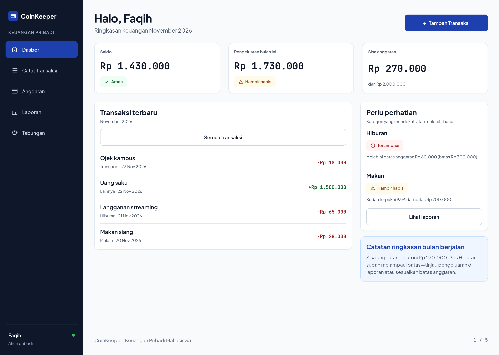
index.html) dengan sidebar 240px, 3 kartu KPI, daftar transaksi terbaru, dan panel peringatan dini.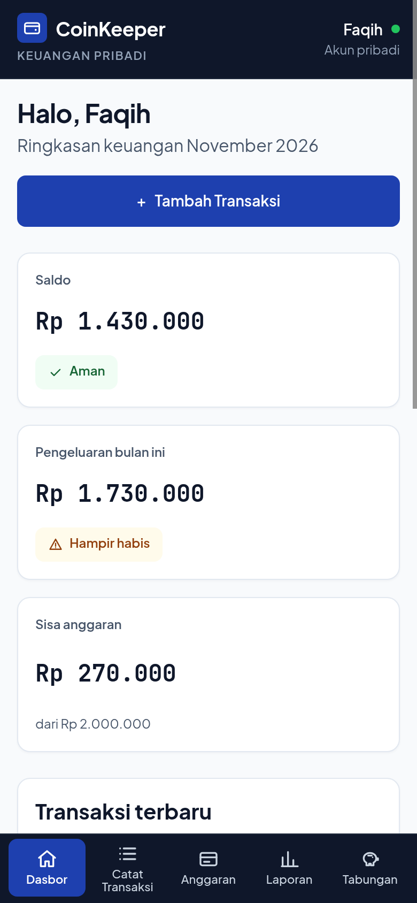
pages/catat-transaksi.html)
Halaman Catat Transaksi memenuhi UC-01 (KF-01, KF-02) dan HTA Task 3. Kolom kiri menampung formulir pencatatan cepat dengan Segmented Control (Pengeluaran vs Pemasukan), kotak input nominal dengan pratinjau nilai Rupiah otomatis, 7 Category Chips interaktif, pemilih tanggal, catatan opsional, serta tombol Batal dan Simpan transaksi. Kolom kanan menampilkan seluruh Riwayat transaksi dengan tombol hapus 44×44px per baris, banner inline Urungkan (Undo) saat item baru dihapus, dan kartu panduan. Setelah penyimpanan sukses, muncul modal dialog konfirmasi dengan opsi lanjut mencatat atau kembali ke Dasbor.
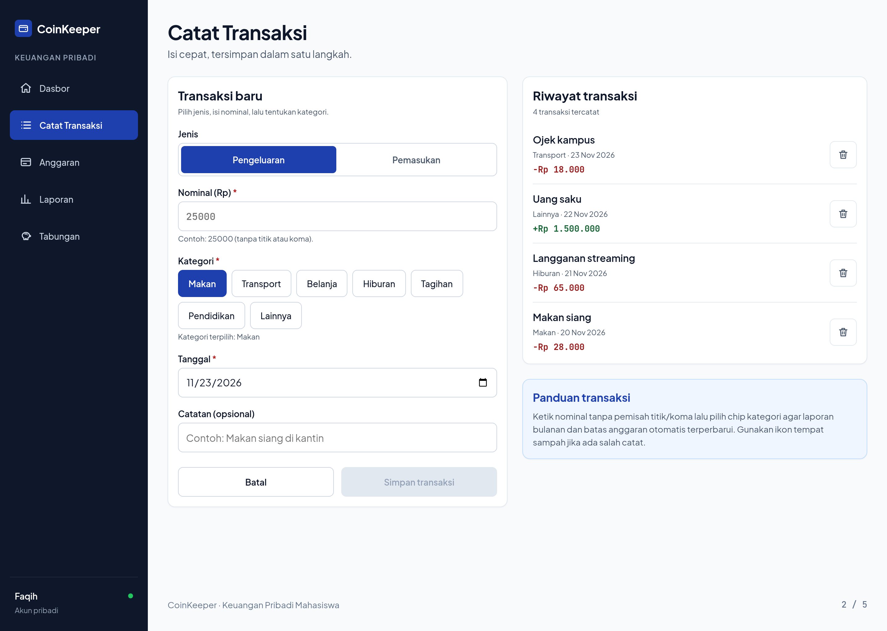
pages/catat-transaksi.html) dalam kondisi siap isi dengan tombol simpan terkunci sebelum nominal valid.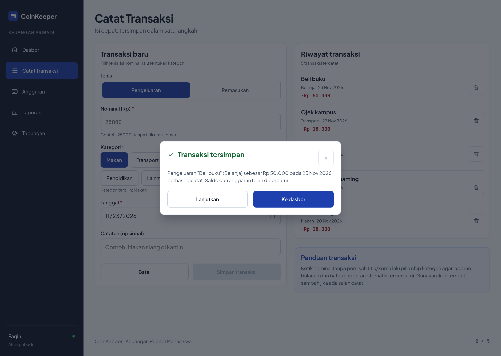
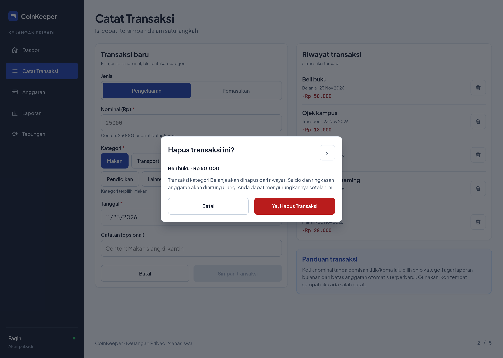
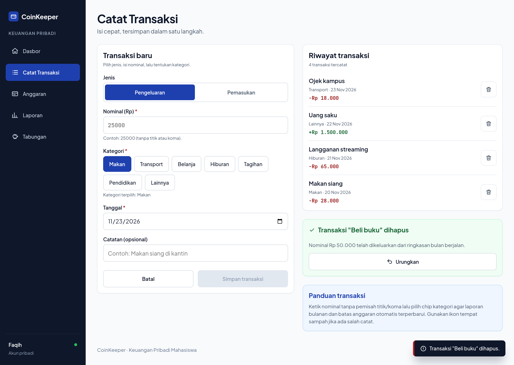
pages/anggaran.html)
Halaman Anggaran Kategori memenuhi UC-03 (KF-04, KF-05) serta HTA Task 2 & 4. Lima kartu kategori (Makan 93%, Belanja 78%, Hiburan 120%, Transport 60%, dan Tagihan 77%) disusun dalam grid 2 kolom di sisi kiri lengkap dengan badge Dual-Signifier, meter progres berwarna semantik, rasio nominal, dan tombol Ubah. Panel samping kanan menyajikan Ringkasan bulanan (total terpakai Rp 1.730.000 / Rp 2.000.000, 87%) serta kartu peringatan merah Peringatan hiburan beserta tombol Tinjau hiburan yang menavigasi ke halaman Laporan. Menekan tombol Ubah membuka modal penyuntingan batas kategori yang memperbarui seluruh badge, progres, serta status peringatan secara langsung dan menyediakan banner Urungkan perubahan.
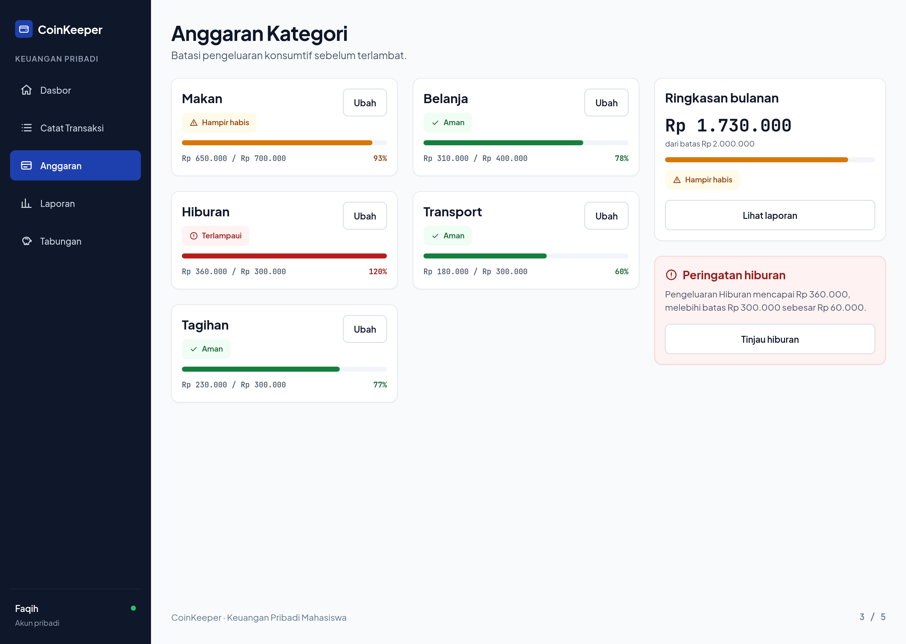
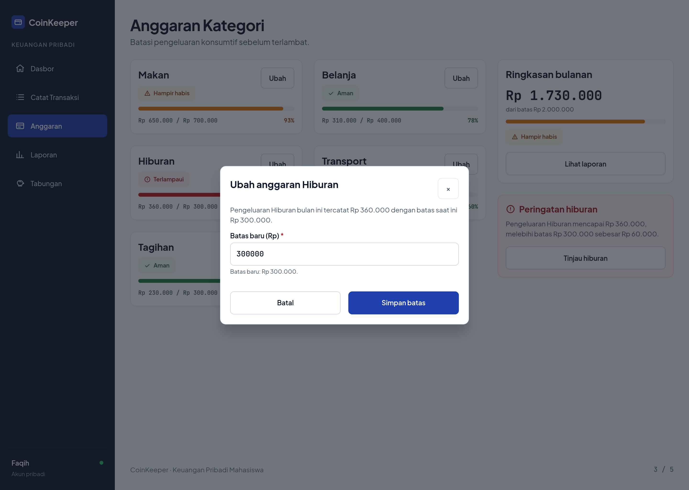
pages/laporan.html)
Halaman Laporan memenuhi UC-02 (KF-03) dan HTA Task 6. Filter bulan pada pojok kanan atas memungkinkan mahasiswa berpindah antara periode Sep, Okt, dan Nov 2026 secara seketika. Grafik batang SVG murni memvisualisasikan pengeluaran per kategori dalam ribuan Rupiah, dilengkapi garis horizontal putus-putus sebagai penanda batas anggaran tiap kategori serta pewarnaan merah dan simbol × bagi kategori yang melebihi batas (Hiburan pada Nov dan Okt 2026). Pengguna dapat mengarahkan kursor atau menekan Tab/Enter pada tiap batang grafik untuk membaca rincian nominal dan sisa batas anggaran. Panel kanan menyajikan Perbandingan bulanan (delta terhadap bulan sebelumnya) dan Total laporan, sedangkan bagian bawah menampilkan Rincian laporan (pengeluaran terbesar dan kategori perlu perhatian).
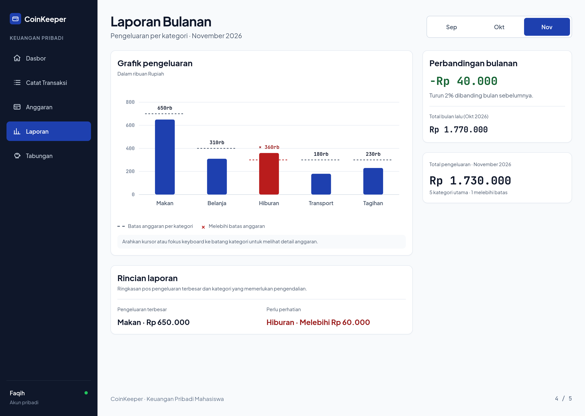
Rp 1.730.000, turun Rp 40.000 dari Okt, pos Hiburan melebihi batas).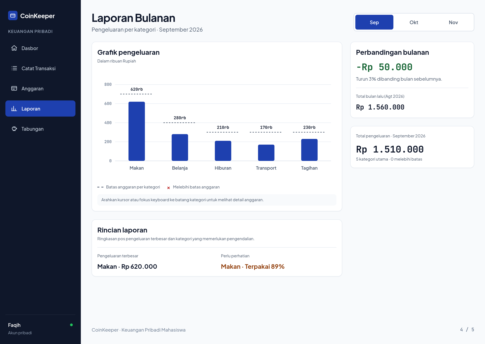
Rp 1.510.000, seluruh kategori di bawah batas 100%).pages/tabungan.html)
Halaman Tabungan memenuhi UC-04 (KF-06, KF-07) dan HTA Task 5. Setiap kartu target tabungan (Laptop baru 12% terkumpul Rp 1.200.000 / Rp 10.000.000 dan Dana darurat 23% terkumpul Rp 700.000 / Rp 3.000.000) dilengkapi cincin progres donat SVG, tenggat waktu, serta tombol + Setor. Tombol + Target Baru di header membuka modal pembuatan target tabungan tambahan. Seluruh aksi setoran terhubung dengan saldo utama sehingga nominal setoran yang melebihi saldo ditolak secara proaktif dan setiap setoran maupun pembuatan target baru dapat dibatalkan melalui banner Urungkan.
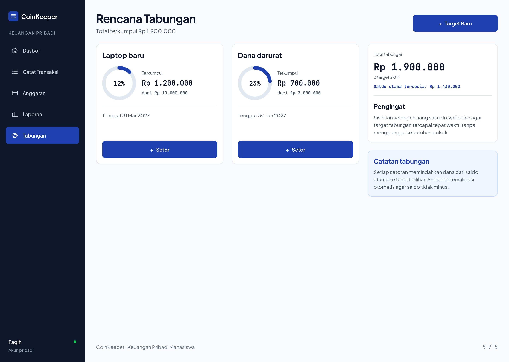
pages/tabungan.html) dengan cincin progres SVG dan ringkasan saldo tersedia.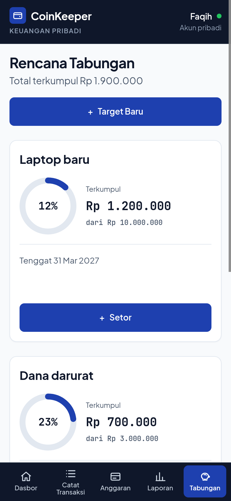
pages/login.html)
Sebagai pelengkap gerbang akses lokal yang selaras dengan sistem desain CoinKeeper, halaman Masuk Akun (pages/login.html) mengadopsi tata letak split-screen adaptif (minmax(380px, 44%) 1fr pada layar ≥ 1024px) yang memadukan panel identitas gelap #0F172A (--color-sidebar-bg) di sisi kiri dengan kartu formulir utama di atas kanvas terang #F8FAFC (--color-bg-canvas) di sisi kanan. Pada lebar viewport di bawah 1024px, panel kiri ringkas menjadi topbar gelap horizontal sehingga formulir masuk tetap berada langsung pada paruh atas layar mobile tanpa perlu menggulung halaman (above the fold).
Secara fungsional, formulir menerapkan validasi inline tiga fase untuk alamat email dan kata sandi (minimal 6 karakter), tombol lihat/sembunyikan kata sandi berukuran target sentuh 44×44px dengan atribut aksesibilitas aria-pressed dan pembaruan status pembaca layar, tombol submit 6-state FSM (disabled saat kolom kosong hingga status muat Memeriksa akun... dengan pemintal), serta dialog modal Bantuan Kata Sandi (<dialog id="dialog-forgot-password">) yang mewarisi 4 jalur keluar mudah dari modal.js. Pengguna dapat mengisi akun demo (faqih@student.ub.ac.id / coinkeeper123) lewat satu klik untuk menyinkronkan profil dan menyimpan sesi ke localStorage['coinkeeper_session_v1'] sebelum diarahkan ke Dasbor, atau memilih tautan langsung Lanjutkan langsung ke Dasbor tanpa masuk.
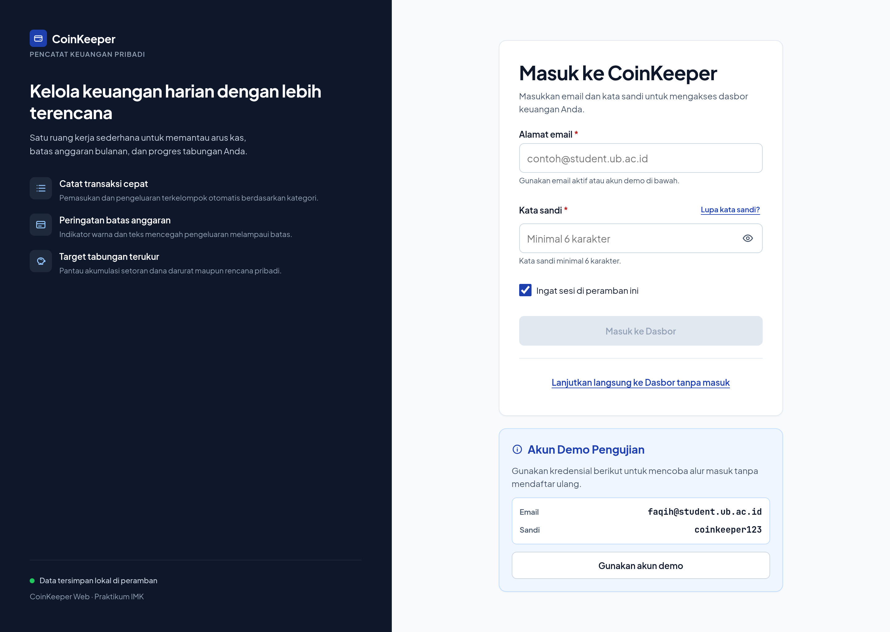
pages/login.html) dengan panel merek gelap kiri, formulir validasi tiga fase, tombol kata sandi 44×44px, dan kartu Akun Demo Pengujian.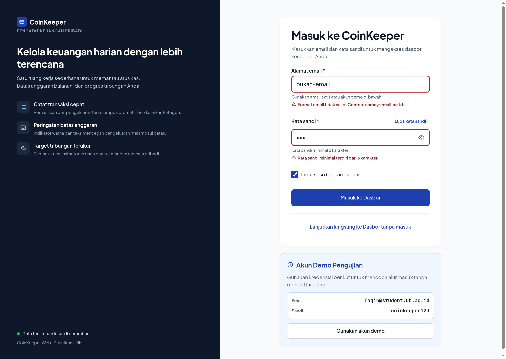
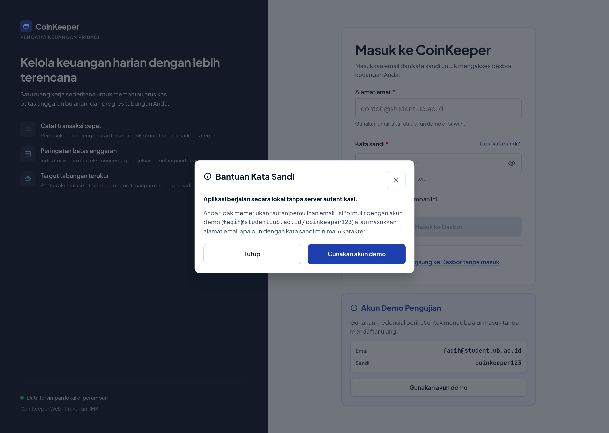
dialog-forgot-password) dengan 4 jalur keluar mudah serta aksi isi otomatis akun demo.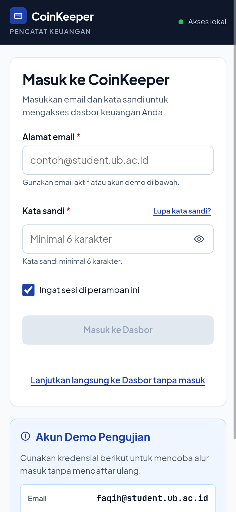
Secara visual dan fungsional, tata letak 240px sidebar, lebar kontainer 1200px, proporsi grid 8+4 kolom, skema warna, ukuran target sentuh 48px, serta seluruh angka awal selaras dengan kanvas Figma web-hi-fi. Beberapa penyempurnaan teknis serta satu halaman masuk akun pelengkap ditambahkan secara terukur demi memenuhi standar aksesibilitas dan rekayasa front-end di modul IMK-10, seperti dirangkum pada Tabel 5.
Tabel 5. Perbandingan Desain Figma (web-hi-fi) vs Implementasi Web & Justifikasi Deviasi
| Aspek / Komponen | Spesifikasi pada Figma | Implementasi Aktual & Justifikasi Teknis |
|---|---|---|
| Aksesibilitas Navigasi & Fokus | Tidak menampilkan tautan lompat (skip link) maupun indikator aria-live visual pada kanvas statis. |
Ditambahkan .skip-link ("Lewati ke konten utama") dan wadah aria-live="polite" agar memenuhi WCAG SC 2.4.1 & SC 4.1.3 sesuai modul IMK-10. |
| Validasi Form & State Error | Kanvas menampilkan kondisi input valid/terisi; tidak menampilkan state pesan kesalahan inline. | Ditambahkan validasi 3 fase (tanda wajib *, pratinjau format Rupiah langsung, pesan error 3 dimensi via aria-describedby, dan penguncian tombol disabled). |
| Dialog Setor Tabungan | Menampilkan nama target dan input nominal setoran. | Ditambahkan info Saldo utama tersedia di deskripsi dialog serta blokir setoran > saldo guna memenuhi KF-07 dan mencegah error sebelum klik simpan. |
| Grafik Batang Laporan | Grafik statis dengan rentang sumbu Y tetap 0–800 (dalam ribuan). |
Dibangun memakai inline SVG dinamis yang dapat menyesuaikan skala Y otomatis jika pengguna menambah pengeluaran > Rp 800.000 serta mendukung sorotan Tab/Enter. |
| Tampilan Layar Kecil (320px) | web-hi-fi dirancang pada 1440px, sedangkan hi-fi mobile pada 390px. |
Menerapkan media query bertingkat sehingga navigasi beralih ke bottom bar < 1024px dan tumpukan satu kolom rapi hingga lebar minimal 320px tanpa scroll horizontal. |
Halaman Masuk Akun (pages/login.html) |
Tidak termasuk dalam 45 frame kanvas web-hi-fi maupun hi-fi. |
Ditambahkan sebagai layar autentikasi lokal pelengkap menggunakan 100% token warna variables.css, komponen .card/.btn/.modal, serta jalur pintas ke index.html agar pengguna dapat menguji alur masuk tanpa server eksternal. |
Bab ini memetakan seluruh landasan teori pada bahan ajar perkuliahan (IMK 01 s.d. IMK 06 dan IMK-10) ke bukti implementasi konkret pada kode sumber maupun antarmuka CoinKeeper.
Tabel 6. Peta Keterlacakan Konsep Materi IMK 01–06 dan IMK-10 pada Website CoinKeeper
| Modul | Konsep Teori Utama | Lokasi & Bukti Penerapan di Website |
|---|---|---|
| IMK 01 | Evolusi Gaya Interaksi (Menu, Form Fill-in, WIMP/GUI, Web & Mobile) | Kombinasi navigasi menu 5 layar (layout.js), formulir terstruktur catat-transaksi.html dan login.html, manipulasi langsung via chip/segmented, serta adaptasi mobile. |
| IMK 02 | Working Memory, Recognition over Recall, Slips vs Mistakes, Gulfs | 7 chip kategori tampak serentak, label persisten di atas input, kartu Akun Demo inline pada login.html, dialog konfirmasi hapus terpisah, dan pesan error 3 dimensi (Gambar 17). |
| IMK 03 | Kerangka Interaksi Abowd & Beale & Karakteristik Perangkat I/O | Alur Articulation–Performance–Presentation–Observation < 200ms; kompatibel papan ketik (Tab/Esc/Enter), tetikus, dan sentuhan mobile ≥ 44px. |
| IMK 04 | Triad Usabilitas Dix & Eight Golden Rules Shneiderman | Konsistensi token CSS, umpan balik instan (termasuk state muat Memeriksa akun...) & closure dialog tersimpan, pencegahan error proaktif, tombol Urungkan, dan 4 jalur keluar modal (Tabel 7). |
| IMK 05 | HTA, IA (≤ 5 layar), Hukum Fitts & Hick, Pemetaan Web Semantik | Hierarki datar 5 layar + 1 layar masuk mandiri, CTA 48px penuh kolom, pemecahan pilihan via Segmented Control (n=2, n=3) & chip (n=7), dan landmark HTML5 murni. |
| IMK 06 | Pre-attentive, Pola Scanning, Gestalt, 60-30-10, WCAG Dual-Signifier, Atomic Design, FSM, Saffer | Pola Z/F/Layer-Cake & split-screen masuk, badge ikon+warna+teks, tombol 6-state FSM, dialog destruktif 4 elemen, mikro-interaksi 80ms/200ms, dan validasi saldo KF-07 (Gambar 18). |
| IMK-10 | Semantik bebas div soup, Reflow 320px, Validasi 3 fase, Keamanan DOM bebas XSS, aria-live |
Universal border-box, helper el() memakai textContent (nol innerHTML), fokus otomatis ke field error pertama, dan audit kontras & ARIA pada 6 halaman. |
Materi IMK 01 (merujuk Dix et al., 2004; Shneiderman et al., 2016) menjelaskan bahwa tidak ada satu gaya interaksi tunggal yang unggul untuk semua konteks; pemilihan gaya harus disesuaikan dengan profil pengguna dan jenis tugas. Pada CoinKeeper, antarmuka memadukan empat gaya interaksi modern secara harmonis:
.sidebar) dan bilah navigasi bawah mobile (.bottom-nav) untuk memindahkan fokus di antara 5 modul tugas utama tanpa perlu mengetik perintah apa pun.Catat Transaksi, Masuk Akun (login.html), serta modal Ubah Anggaran, Setor Tabungan, dan Target Baru dengan tipe input terstruktur (inputmode="numeric", inputmode="email", type="date") guna meminimalkan kesalahan entri.Berdasarkan model pemrosesan informasi manusia (Card, Moran, & Newell, 1983) pada IMK 02, kapasitas Working Memory sangat terbatas dan rentan terhadap distraksi. Oleh karena itu, CoinKeeper memindahkan beban pengetahuan dari Knowledge in the Head ke Knowledge in the World melalui tiga mekanisme utama:
Masuk Akun, kartu biru Akun Demo Pengujian juga menampilkan kredensial uji langsung di layar dengan satu tombol isi otomatis..form-label), disertai pratinjau nilai Rupiah secara waktu-nyata (mis. Setara Rp 50.000) dan pembaruan instan pada saldo/badge status agar jurang eksekusi dan evaluasi tertutup seketika.login.html agar pengguna dapat memeriksa ketikan sebelum mengirim. Kesalahan pemahaman (mistakes) dicegah dengan tombol konfirmasi destruktif berlabel spesifik dan pesan error tiga dimensi (apa yang salah, mengapa salah, dan cara memperbaiki) seperti tampak pada Gambar 17.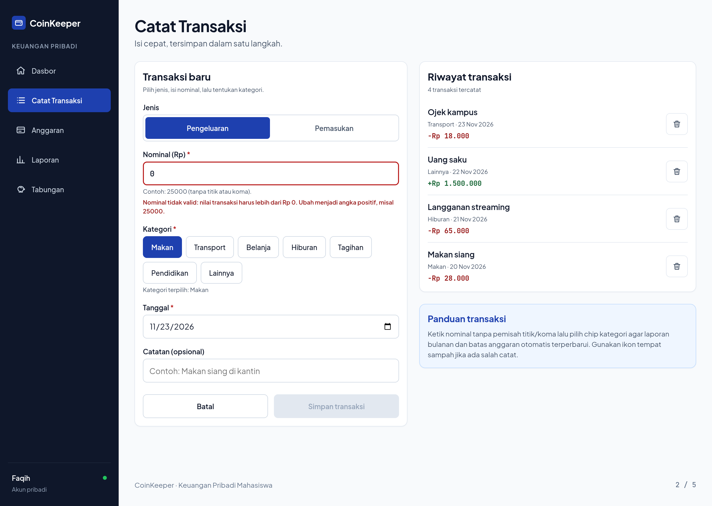
aria-invalid="true" serta tombol Simpan transaksi dalam status disabled.Mengacu pada kerangka interaksi empat komponen Abowd & Beale (User, Input, System, Output) dalam IMK 03, CoinKeeper mengoptimalkan empat tahap penerjemahan interaksi secara konsisten:
+ Tambah Transaksi, tab jenis 1-klik, dan papan angka virtual (inputmode="numeric") di perangkat seluler.js/utils/storage.js) memvalidasi masukan, menghitung ulang saldo tunai, persentase anggaran, dan selisih bulanan secara instan (< 10ms) di memori lokal peramban.aria-live.Seluruh keputusan desain dialog berpedoman pada tiga pilar usabilitas Dix et al. (2004)—Learnability (istilah lokal Indonesia akrab mahasiswa, tata letak konsisten antarhalaman), Flexibility (navigasi penuh keyboard dan mekanisme pembatalan aksi), serta Robustness (validasi sebelum simpan dan konfirmasi penghapusan)—yang dijabarkan secara operasional melalui Eight Golden Rules Shneiderman pada Tabel 7.
Tabel 7. Penerapan Shneiderman's Eight Golden Rules pada Antarmuka CoinKeeper
| Golden Rule (Shneiderman) | Penerapan Konkret & Bukti pada Kode / Halaman |
|---|---|
| 1. Strive for Consistency | Struktur sidebar/bottom-nav, posisi header/CTA, tinggi tombol 48px, serta palet css/variables.css seragam di seluruh halaman, termasuk panel gelap brand pada pages/login.html. |
| 2. Seek Universal Usability | Mendukung pengguna pemula lewat kartu panduan, teks bantu statis, dan akun demo 1-klik, sekaligus pengguna mahir lewat navigasi papan ketik penuh (Tab, Enter, Esc) dan skip-link. |
| 3. Offer Informative Feedback | Setiap klik memberi efek tekan 80ms; penyimpanan menampilkan modal konfirmasi; tombol masuk menampilkan status Memeriksa akun...; aksi simpan/hapus memicu toast serta pengumuman pembaca layar. |
| 4. Design Dialogs to Yield Closure | Alur Catat Transaksi diakhiri secara tegas oleh modal dialog hijau "Transaksi tersimpan" (Gambar 4), sedangkan alur masuk menampilkan toast konfirmasi dan mengarahkan langsung ke Dasbor. |
| 5. Prevent Errors | Tombol submit dinonaktifkan saat input wajib kosong/nol (termasuk di login.html); input menyaring karakter non-angka secara otomatis; setoran melebihi saldo ditolak sebelum mutasi (Gambar 18). |
| 6. Permit Easy Reversal of Actions | Tersedia tombol Batal di formulir/modal, 4 jalur tutup modal di modal.js (termasuk dialog Bantuan Kata Sandi), serta banner Urungkan (Undo) setelah menghapus transaksi, mengubah anggaran, menyetor, dan membuat target. |
| 7. Keep Users in Control | Pengguna berinisiatif penuh memilih bulan laporan, mengubah batas anggaran kapan saja, beralih langsung ke Dasbor dari halaman masuk, dan menutup modal tanpa paksaan waktu otomatis. |
| 8. Reduce Short-Term Memory Load | Label persisten, 7 chip kategori selalu terlihat, ringkasan pengeluaran/saldo saat ini ikut ditampilkan langsung di modal Ubah Anggaran & Setor, dan kredensial demo tersedia persisten di kartu bantu masuk. |
website/js/components/modal.js:/* Jalur Keluar 1 & 2: Tombol Tutup (X) dan Tombol Batal */
dialogEl.querySelectorAll('[data-dialog-close]').forEach(function (btn) {
btn.addEventListener('click', close);
});
/* Jalur Keluar 3: Klik Backdrop Redup di luar panel modal */
dialogEl.addEventListener('click', function (evt) {
if (evt.target === dialogEl) { close(); }
});
/* Jalur Keluar 4: Tombol Esc (native cancel + keydown fallback pada <dialog>) */
dialogEl.addEventListener('cancel', function (evt) { evt.preventDefault(); close(); });
dialogEl.addEventListener('keydown', function (evt) {
if (evt.key === 'Escape' && dialogEl.open) { evt.preventDefault(); close(); }
});
Enam tugas pada dekomposisi HTA di Laporan Tahap 2 dipetakan langsung ke 5 layar dengan kedalaman navigasi 1 level (shallow IA). Penerapan dua hukum ergonomi kognitif IMK 05 (Yablonski, 2020) terlihat jelas pada dimensi kontrol:
MT = a + b log₂(D/W + 1)): Tombol CTA utama (+ Tambah Transaksi, Simpan transaksi, Masuk ke Dasbor, + Target Baru, + Setor) memiliki tinggi 48px dan lebar penuh kontainer (240px–388px), sehingga indeks kesulitan gerakan (Index of Difficulty) sangat rendah.RT = a + b log₂(n + 1)): Opsi berjumlah kecil (n = 2 jenis transaksi; n = 3 bulan laporan) disajikan memakai Segmented Control agar tampak seketika; tujuh kategori (n = 7) disusun dalam grup chip teratur tanpa menggulung daftar panjang.website/index.html:<body data-page="dasbor" data-root="." data-screen="1 / 5">
<a href="#konten-utama" class="skip-link">Lewati ke konten utama</a>
<div class="app-shell">
<aside id="app-sidebar" class="sidebar" aria-label="Bilah navigasi samping"></aside>
<div class="app-main">
<main id="konten-utama" class="main-content" tabindex="-1">
<header class="page-header">...</header>
<section class="dasbor-kpis" aria-label="Ringkasan kondisi keuangan">...</section>
<div class="dasbor-grid">
<section class="card dasbor-recent">...</section>
<aside class="dasbor-aside">...</aside>
</div>
<footer id="app-footer" class="page-footer"></footer>
</main>
</div>
<nav id="app-bottom-nav" class="bottom-nav" aria-label="Navigasi bawah mobile"></nav>
</div>
</body>
Implementasi visual menerjemahkan seluruh prinsip kognisi visual pada IMK 06:
#1E40AF dan batang/badge merah #B91C1C langsung menarik fokus mata di tengah permukaan netral #FFFFFF/#F8FAFC.4px) dari jarak antargrup (16px–24px); Common Region membungkus tiap entitas dalam kartu berbatas #E2E8F0; Similarity menyeragamkan semua badge status dan tombol aksi; serta Figure-Ground memisahkan modal aktif dari kanvas melalui backdrop gelap rgba(21, 26, 37, 0.60).× pada grafik Laporan)..btn 6 status), Molekul (.form-group, .password-field, .tx-item, .budget-card, .goal-card), hingga Organisme (.sidebar, .modal, grafik SVG).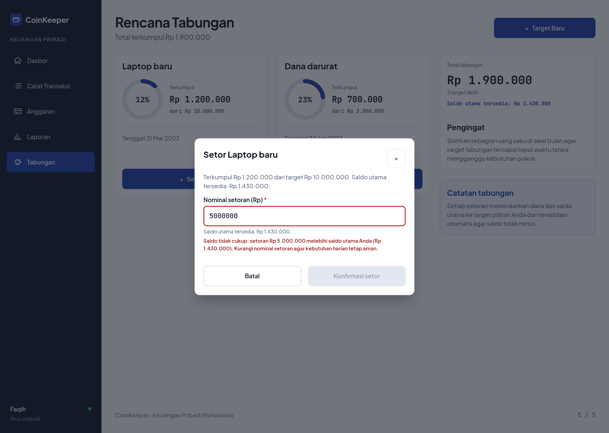
KF-07) saat pengguna mencoba menyetor Rp 5.000.000 melebihi saldo Rp 1.430.000.website/css/components.css:.btn--primary { background-color: var(--color-action-primary); color: var(--color-action-text); }
.btn--primary:hover:not(:disabled) { background-color: var(--color-action-hover); box-shadow: var(--shadow-hover); }
.btn--primary:active:not(:disabled) { background-color: var(--color-action-active); transform: scale(0.98); }
.btn:disabled { background-color: var(--color-action-disabled-bg); color: var(--color-action-disabled-text); cursor: not-allowed; }
.btn--loading { pointer-events: none; opacity: 0.92; }
Berdasarkan modul praktikum IMK-10, implementasi kode menerapkan empat jaminan mutu rekayasa web: (1) universal box-sizing: border-box agar dimensi grid stabil tanpa meluap; (2) CSS Grid 2 dimensi untuk kerangka makro dan Flexbox untuk tata letak mikro dengan reflow mulus hingga 320px; (3) fokus otomatis ke kolom pertama yang gagal validasi; serta (4) keamanan DOM bebas Cross-Site Scripting (XSS) dengan melarang penggunaan innerHTML untuk data pengguna dan mewajibkan textContent lewat helper terpusat CoinKeeper.fmt.el() serta document.createElementNS(). Perubahan status dinamis diumumkan kepada pembaca layar melalui aria-live="polite" pada toast.js.
website/js/utils/format.js:/* Helper DOM aman: teks selalu di-assign via textContent, tidak pernah innerHTML */
function el(tag, attrs, children) {
const node = document.createElement(tag);
if (attrs) {
Object.keys(attrs).forEach(function (key) {
const val = attrs[key];
if (val === undefined || val === null || val === false) return;
if (key === 'className') node.className = val;
else if (key === 'text') node.textContent = val;
else node.setAttribute(key, val === true ? '' : String(val));
});
}
/* ... append child nodes atau textNode ... */
return node;
}
Inspeksi mandiri sistematis dilakukan terhadap seluruh alur website menggunakan sepuluh kaidah Usability Heuristics Jakob Nielsen (1994) sebagaimana dipelajari pada IMK 04. Ringkasan temuan dan solusi implementasi tercantum pada Tabel 8.
Tabel 8. Hasil Evaluasi Heuristik Menggunakan 10 Heuristik Jakob Nielsen
| Heuristik Nielsen | Aspek yang Dievaluasi | Solusi pada Website CoinKeeper | Status |
|---|---|---|---|
| H1. Visibility of System Status | Apakah status saldo, progres anggaran, proses simpan/masuk, dan perubahan data langsung terlihat? | Badge status Aman/Hampir habis/Terlampaui, progress bar 200ms, spinner tombol Menyimpan... dan Memeriksa akun..., modal sukses, toast, serta aria-live. |
Terpenuhi |
| H2. Match Between System & Real World | Apakah label memakai bahasa mahasiswa dan format mata uang alami Indonesia? | Seluruh salinan memakai Bahasa Indonesia alami (Uang saku, Ojek kampus, Sisa anggaran, Setor, Kata sandi) dan format Rp 1.430.000. |
Terpenuhi |
| H3. User Control & Freedom | Apakah pengguna bebas membatalkan aksi salah dan keluar dari dialog tanpa terjebak? | Banner Urungkan pasca-hapus/ubah/setor/target baru, tombol Batal, pintasan langsung ke Dasbor dari login, serta 4 jalur keluar mudah modal (×, Batal/Tutup, backdrop, Esc). |
Terpenuhi |
| H4. Consistency & Standards | Apakah ikon, posisi navigasi, dan konvensi warna konsisten di seluruh layar? | Sidebar/bottom-nav identik di 5 layar utama, panel identitas gelap dan token variables.css konsisten pada login.html, dan penomoran halaman footer 1/5–5/5. |
Terpenuhi |
| H5. Error Prevention | Apakah sistem mencegah input cacat atau tindakan merusak sebelum terjadi? | Tombol submit terkunci saat input wajib kosong/nol (termasuk email/sandi di login.html), input menyaring huruf otomatis, modal konfirmasi hapus, dan blokir setoran > saldo. |
Terpenuhi |
| H6. Recognition Rather than Recall | Apakah pilihan terlihat di layar tanpa membebani ingatan antarhalaman? | 7 chip kategori selalu tampil; deskripsi modal menampilkan saldo/batas aktif saat itu; halaman masuk menampilkan kredensial akun demo langsung di layar. | Terpenuhi |
| H7. Flexibility & Efficiency of Use | Apakah tersedia pintasan dan alur cepat baik lewat tetikus, sentuhan, maupun papan ketik? | Tombol pintas + Tambah Transaksi di Dasbor, isi otomatis akun demo 1-klik, default tanggal hari aktif, serta akses penuh keyboard (Tab, Enter, Esc). |
Terpenuhi |
| H8. Aesthetic & Minimalist Design | Apakah informasi disajikan ringkas tanpa elemen dekoratif pengganggu fokus? | Proporsi warna 60-30-10 bersih, spasi lega 8-point grid, setiap layar hanya menampilkan metrik dan aksi yang relevan dengan tugas utama. | Terpenuhi |
| H9. Help Users Recognize, Diagnose & Recover from Errors | Apakah pesan galat menjelaskan masalah dan solusi dengan bahasa manusia? | Pesan error 3 dimensi menjelaskan lokasi, batas yang dilanggar (mis. saldo Rp 1.430.000 atau format email/panjang sandi minimal 6 karakter), dan instruksi perbaikan konkret. | Terpenuhi |
| H10. Help & Documentation | Apakah terdapat panduan kontekstual ringkas di tempat pengguna membutuhkan? | Kartu panduan biru (Catatan ringkasan, Panduan transaksi, Catatan tabungan, Akun Demo Pengujian), modal Bantuan Kata Sandi, dan helper text di bawah tiap input. | Terpenuhi |
Pengujian fungsional dilakukan secara otomatis menggunakan skrip verifikasi end-to-end berbasis Chrome DevTools Protocol (verify_site.mjs untuk 5 layar utama dan verify_login.mjs untuk halaman masuk) langsung melalui protokol file://. Lima belas skenario pada Tabel 9 memverifikasi berfungsinya setiap Use Case, Kebutuhan Fungsional, dan alur masuk lokal.
Tabel 9. Checklist Pengujian Fungsional End-to-End (Use Case → Skenario → Hasil)
| ID Uji | Use Case / KF | Skenario Pengujian | Hasil Aktual yang Teramati | Hasil |
|---|---|---|---|---|
| UJ-01 | HTA-T1 | Memuat index.html pada kondisi data awal. |
Saldo Rp 1.430.000, Pengeluaran Rp 1.730.000, Sisa Rp 270.000, 4 transaksi, 2 peringatan. |
Lulus |
| UJ-02 | UC-01 / KF-02 | Mengisi nominal 0 lalu keluar dari kolom (blur). |
aria-invalid="true" aktif, pesan error 3 dimensi muncul, tombol simpan tetap disabled. |
Lulus |
| UJ-03 | UC-01 / KF-01 | Menambah pengeluaran 50000, chip Belanja, catatan Beli buku. |
Modal Transaksi tersimpan terbuka; riwayat bertambah menjadi 5 baris. | Lulus |
| UJ-04 | HTA-3.6 (H3) | Membuka dialog hapus lalu menekan tombol keyboard Esc. |
Dialog tertutup aman tanpa menghapus transaksi. | Lulus |
| UJ-05 | HTA-3.6 (Undo) | Konfirmasi Ya, Hapus Transaksi lalu menekan Urungkan. |
Daftar turun ke 4 item dengan banner Undo, lalu kembali ke 5 item setelah Undo. | Lulus |
| UJ-06 | Persistensi | Navigasi ke index.html setelah mencatat Beli buku Rp 50.000. |
Saldo otomatis menjadi Rp 1.380.000 dan pengeluaran menjadi Rp 1.780.000. |
Lulus |
| UJ-07 | UC-03 / KF-04 | Mengubah batas anggaran Hiburan menjadi 400000. |
Status Hiburan berubah dari Terlampaui (120%) ke Hampir habis (90%); kartu peringatan aman. | Lulus |
| UJ-08 | UC-03 (Undo) | Menekan Urungkan perubahan pada halaman Anggaran. |
Batas Hiburan kembali ke Rp 300.000 (120% Terlampaui). |
Lulus |
| UJ-09 | UC-02 / KF-03 | Berpindah filter bulan Nov → Okt → Sep di Laporan. |
Total diperbarui: Nov Rp 1.730.000 (-Rp 40.000), Okt Rp 1.770.000 (+Rp 260.000), Sep Rp 1.510.000 (-Rp 50.000). |
Lulus |
| UJ-10 | UC-04 / KF-07 | Menyetor 5000000 ke Laptop baru saat saldo Rp 1.430.000. |
Pesan error "Saldo tidak cukup..." tampil dan tombol konfirmasi terkunci. | Lulus |
| UJ-11 | UC-04 / KF-06 | Menyetor 300000 ke Laptop baru lalu klik Urungkan setoran. |
Persentase naik 12% → 15%, total tabungan Rp 2.200.000, saldo tersedia Rp 1.130.000; lalu pulih pasca-Undo. |
Lulus |
| UJ-12 | UC-04 | Membuat target baru Biaya KKN Rp 2.000.000 lalu klik Urungkan target. |
Kartu ke-3 muncul pada grid dan kembali menjadi 2 kartu setelah Undo. | Lulus |
| UJ-13 | Tambahan (Auth) | Mengisi email bukan-email dan sandi 123 lalu menekan Masuk ke Dasbor. |
aria-invalid="true" aktif di kedua kolom, error format email & min. 6 karakter tampil, fokus otomatis ke #login-email. |
Lulus |
| UJ-14 | Auth (Kontrol) | Mengklik toggle lihat kata sandi serta membuka dialog Lupa kata sandi? lalu menekan Esc. |
Tipe input beralih password↔text (aria-pressed), modal tertutup bersih saat Esc dengan fokus kembali ke pemicu. |
Lulus |
| UJ-15 | Auth (Sesi) | Memilih Gunakan akun demo dan mengirim formulir masuk. |
Tombol memasuki state muat (aria-busy="true", Memeriksa akun...), coinkeeper_session_v1 tersimpan, lalu beralih ke index.html (Halo, Faqih). |
Lulus |
Seluruh enam halaman diuji pada empat ukuran viewport representatif (Desktop 1440×1024, Tablet 768×1024, Mobile 390×844, dan Ambang Reflow 320×800) serta diaudit kelengkapan semantik, kontrol aksesibel, dan kebersihan konsol peramban.
Tabel 10. Hasil Pengujian Tata Letak Responsif dan Reflow (scrollWidth ≤ innerWidth)
| Halaman Diuji | Desktop (1440px) | Tablet (768px) | Mobile (390px) | Reflow (320px) |
|---|---|---|---|---|
01 · Dasbor (index.html) |
0 Overflow | 0 Overflow | 0 Overflow | 0 Overflow |
02 · Catat Transaksi |
0 Overflow | 0 Overflow | 0 Overflow | 0 Overflow |
03 · Anggaran |
0 Overflow | 0 Overflow | 0 Overflow | 0 Overflow |
04 · Laporan |
0 Overflow | 0 Overflow | 0 Overflow | 0 Overflow |
05 · Tabungan |
0 Overflow | 0 Overflow | 0 Overflow | 0 Overflow |
06 · Masuk Akun (login.html) |
0 Overflow | 0 Overflow | 0 Overflow | 0 Overflow |
Tabel 11. Audit Aksesibilitas WCAG 2.2 Level AA, Keamanan DOM, dan Konsol Peramban
| Parameter Audit | Cakupan Pemeriksaan | Hasil Audit |
|---|---|---|
| Deklarasi Bahasa & Hierarki Heading | Atribut <html lang="id"> dan tepat 1 elemen <h1> per halaman. |
6 / 6 Lulus |
| Bypass Blocks & Landmark Utama | Keberadaan .skip-link menuju <main id="konten-utama">. |
6 / 6 Lulus |
| Pelabelan Formulir & Urutan Fokus | Seluruh <input> memiliki <label for>; tidak ada tabindex > 0. |
0 Pelanggaran |
| Pengumuman Dinamis (ARIA Live) | Keberadaan region aria-live="polite" untuk perubahan status dan toast. |
6 / 6 Lulus |
| Keamanan DOM & Konsistensi Token CSS | Pencarian statis innerHTML, type="module", dan hex hard-coded di luar variables.css. |
0 Temuan |
Konsol & Runtime Exceptions (file://) |
Log error konsol & exception tidak tertangani selama seluruh sesi uji E2E. | 0 Error |
Sesuai batasan ruang lingkup pengembangan front-end statis tanpa server, terdapat beberapa keterbatasan pada versi implementasi saat ini:
localStorage peramban sehingga data keuangan hanya tersimpan pada satu peramban/perangkat yang sama dan akan kembali ke data awal apabila penyimpanan situs dibersihkan pengguna.pages/login.html menyediakan simulasi sesi masuk akun lokal peramban (coinkeeper_session_v1), namun belum terhubung ke layanan API autentikasi atau basis data terpusat untuk sinkronisasi lintas perangkat (misal antara laptop dan ponsel mahasiswa).Apabila aplikasi CoinKeeper dilanjutkan ke tahap produksi penuh, beberapa pengembangan lanjutan yang direkomendasikan adalah:
storage.js ke layanan backend agar mahasiswa dapat mengakses riwayat dan anggaran secara sinkron dari ponsel maupun laptop.css/variables.css yang sudah terpisah untuk menambahkan dukungan tema gelap otomatis melalui @media (prefers-color-scheme: dark).
Pengembangan antarmuka web statis CoinKeeper telah berhasil menerjemahkan prototipe high-fidelity Figma (web-hi-fi) ke dalam situs web multi-halaman berbasis HTML5 semantik, CSS3 berbasis Design Tokens, dan JavaScript ES6+ murni yang dapat dijalankan langsung secara luring melalui berkas index.html (maupun lewat halaman masuk akun lokal pages/login.html). Seluruh lima layar inti, halaman autentikasi pelengkap, dialog konfirmasi, mekanisme pencegahan error, validasi saldo tabungan, fitur pemulihan aksi (Urungkan), grafik batang komparatif, serta adaptasi responsif hingga layar 320px terbukti berjalan fungsional tanpa kesalahan konsol.
Melalui pendokumentasian yang ketat antara teori perkuliahan (IMK 01–06 dan IMK-10) dengan bukti kode dan tangkapan layar nyata, proyek ini membuktikan bahwa perancangan antarmuka yang berpusat pada manusia—dengan memperhatikan batas memori kerja, ergonomi ukuran target, kontras warna inklusif, dan kendali penuh pengguna—menghasilkan aplikasi keuangan mahasiswa yang tidak hanya rapi secara visual, tetapi juga aman, mudah dipelajari, dan aksesibel bagi semua kalangan.